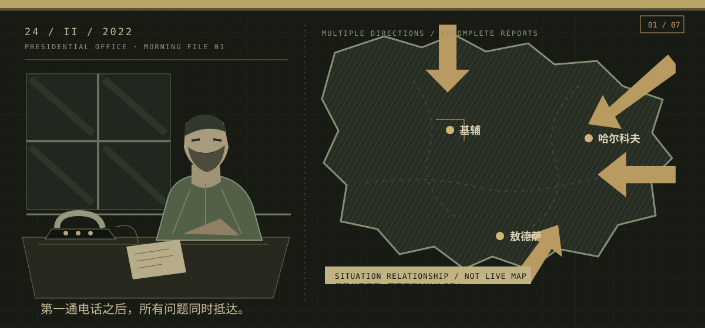

总统办公室 · 早间简报情报可信度 / 高
全面入侵
基辅、哈尔科夫与敖德萨等方向传来爆炸和越境报告。霍斯托梅尔机场方向出现空降行动报告。对方公开要求乌克兰军队放下武器，全面战争已经开始。
当时已知多点遇袭与机场方向报告正在送达。
当时未知各方向投入规模、基辅冲击速度与外援交付。
展开情报边界与模拟说明
以上只保留第一回合事件中的当时情报；不使用后来确认的结果引导决策。
本页仅展示界面设计。国家读数、AP 与决策内容取自现有项目数据；选择不会结算任何效果。
决策文件 / 选择后签发
本回合 3 AP · 可组合签发